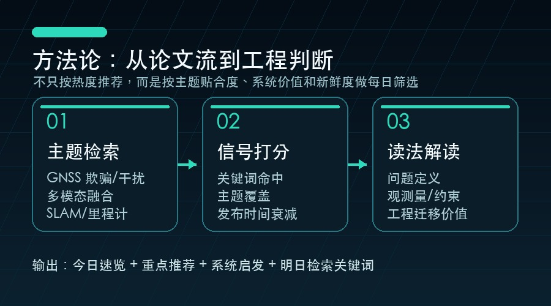

推荐阅读框架
这份日报不是简单按 arXiv 最新排序，而是先用主题查询收集候选论文，再做标题级去重，并按关键词命中、主题覆盖、发布时间、引用/venue/代码/数据集线索和工程迁移价值排序。读者可以把它当成一个每日研究雷达：先定位方向，再判断是否值得阅读全文。

方法论：从论文流到工程判断
1. 先看问题
欺骗/干扰、融合退化，还是 SLAM 鲁棒性？
2. 再看质量
引用、venue、代码、数据集和真实实验线索是否足够？
3. 最后看迁移
误报率、实时性、失败案例和传感器配置是否可信？
#1 · 2026-02-13 · eess.SP
GNSS Jamming Detection with Automatic Gain Control (AGC) and Carrier-to-Noise Ratio Density (CNO) Observables from a COTS receiver
Syed Ali Kazim, Anas Darwich, Juliette Marais
质量信号：质量分 0.0；venue 7th SmartRacon scientific seminar, Oct 2025, Stuttgart, Germany
#2 · 2026-05-14 · cs.LG
GenAI for Energy-Efficient and Interference-Aware Compressed Sensing of GNSS Signals on a Google Edge TPU
Thorben Wegner, Lucas Heublein, Tobias Feigl, Felix Ott 等
质量信号：质量分 6.5；venue IEEE/ION Position, Location and Navigation Symposium (PLANS), Salt Lake City, UT
#3 · 2026-05-07 · cs.SD
Quantum Kernels for Audio Deepfake Detection Using Spectrogram Patch Features
Lisan Al Amin, Rakib Hossain, Mahbubul Islam, Faisal Quader 等
质量信号：质量分 0.0；暂无外部质量元数据
01 · 2026-02-13 · eess.SP
作者：Syed Ali Kazim, Anas Darwich, Juliette Marais
关键词
gnss jamming、gnss、gps、spoofing、jamming、interference、integrity、detection、receiver
质量信号
质量分 0.0；venue 7th SmartRacon scientific seminar, Oct 2025, Stuttgart, Germany
为什么值得读
这篇论文同时覆盖 邮件指定关键词、GNSS 欺骗与干扰检测，并在标题/摘要中出现 gnss jamming、gnss、gps、spoofing、jamming、interference、integrity、detection、receiver 等信号；质量侧还有 质量分 0.0；venue 7th SmartRacon scientific seminar, Oct 2025, Stuttgart, Germany。它适合用来观察该方向近期如何处理鲁棒性、异常检测或融合估计问题。
工程启发
可借鉴其异常定义和误报抑制思路，把 GNSS 可信度作为状态估计输入的一部分，而不是孤立阈值。
摘要要点
从题名与摘要看，论文主要关注 GNSS 欺骗/干扰场景下的异常识别与完整性监测；方法线索包括 gnss jamming、gnss、gps、spoofing、jamming、interference。阅读全文时建议重点看 可观测量设计、误报控制、攻击与非攻击故障的区分方式，再判断是否适合迁移到自己的工程链路。
02 · 2026-05-14 · cs.LG
作者：Thorben Wegner, Lucas Heublein, Tobias Feigl, Felix Ott 等
关键词
gnss jamming、gnss、spoofing、jamming、interference、receiver
质量信号
质量分 6.5；venue IEEE/ION Position, Location and Navigation Symposium (PLANS), Salt Lake City, UT
为什么值得读
这篇论文同时覆盖 邮件指定关键词、GNSS 欺骗与干扰检测，并在标题/摘要中出现 gnss jamming、gnss、spoofing、jamming、interference、receiver 等信号；质量侧还有 质量分 6.5；venue IEEE/ION Position, Location and Navigation Symposium (PLANS), Salt Lake City, UT。它适合用来观察该方向近期如何处理鲁棒性、异常检测或融合估计问题。
工程启发
可借鉴其异常定义和误报抑制思路，把 GNSS 可信度作为状态估计输入的一部分，而不是孤立阈值。
摘要要点
从题名与摘要看，论文主要关注 GNSS 欺骗/干扰场景下的异常识别与完整性监测；方法线索包括 gnss jamming、gnss、spoofing、jamming、interference、receiver。阅读全文时建议重点看 可观测量设计、误报控制、攻击与非攻击故障的区分方式，再判断是否适合迁移到自己的工程链路。
03 · 2026-05-07 · cs.SD
作者：Lisan Al Amin, Rakib Hossain, Mahbubul Islam, Faisal Quader 等
关键词
spoofing detection、spoofing、detection、receiver
质量信号
质量分 0.0；暂无外部质量元数据
为什么值得读
这篇论文同时覆盖 邮件指定关键词、GNSS 欺骗与干扰检测，并在标题/摘要中出现 spoofing detection、spoofing、detection、receiver 等信号；质量侧还有 质量分 0.0；暂无外部质量元数据。它适合用来观察该方向近期如何处理鲁棒性、异常检测或融合估计问题。
工程启发
可借鉴其异常定义和误报抑制思路，把 GNSS 可信度作为状态估计输入的一部分，而不是孤立阈值。
摘要要点
从题名与摘要看，论文主要关注 GNSS 欺骗/干扰场景下的异常识别与完整性监测；方法线索包括 spoofing detection、spoofing、detection、receiver。阅读全文时建议重点看 可观测量设计、误报控制、攻击与非攻击故障的区分方式，再判断是否适合迁移到自己的工程链路。
推荐阅读框架
本文基于公开论文元数据生成，建议阅读原文后再引用具体实验结论。